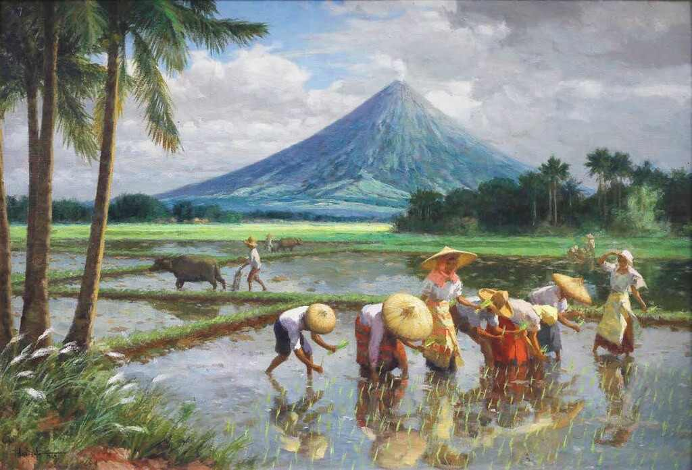
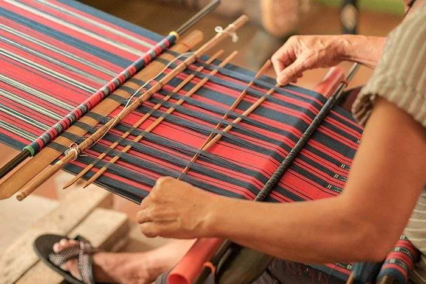
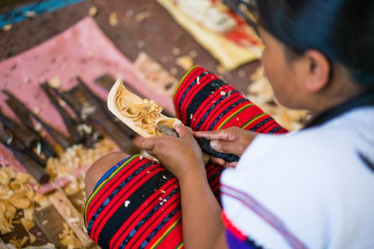
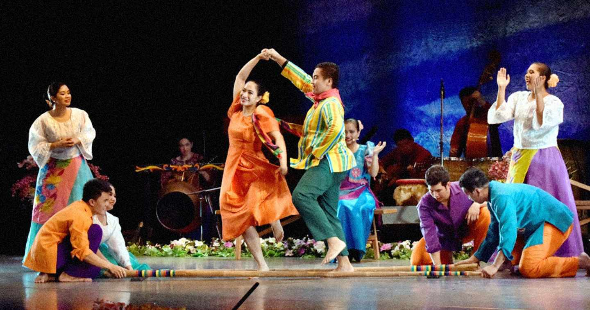
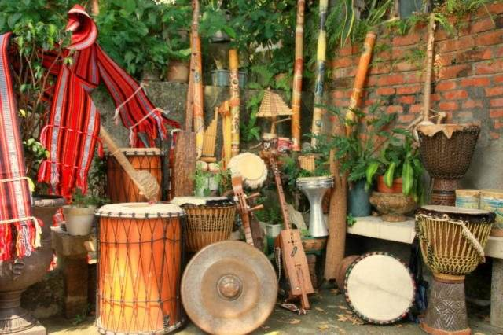
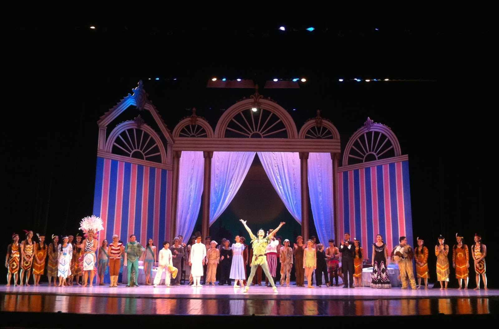

Introduction to Filipino Arts
The Philippines has a rich and diverse artistic tradition that Reflects its complex history and cultural influences. From Pre-colonial indigenous art to Spanish colonial religious art and Modern contemporary expressions, Filipino art showcases the country's Unique identity and heritage.
Filipino art is characterized by vibrant colors, intricate details, And a blend of Eastern and Western influences. It often tells stories Of Filipino life, values, and traditions, serving as a visual record Of the nation's history and cultural evolution.
Visual Arts
Visual arts in the Philippines encompass a wide range of forms, from Traditional painting and sculpture to indigenous crafts and Contemporary installations.
Painting
Filipino painting has evolved from religious art during the Spanish colonial period to the social realism of the 20th century. Traditional Filipino paintings often depict rural landscapes, Historical events, and everyday life.
Weaving
Traditional weaving is an important part of Filipino cultural Heritage. Different regions have their own distinctive patterns And techniques, such as the Ikat of the Visayas and the intricate Designs of T'nalak from Mindanao.
Sculpture
Filipino sculpture ranges from religious icons carved during the Spanish era to modern abstract works. Indigenous wood carving Traditions are still practiced in regions like Ifugao, known for Their bulul rice guardian figures.
Performing Arts
The performing arts in the Philippines include traditional and Contemporary forms of dance, music, and theater that showcase the Country's cultural diversity.
Traditional Dance
Filipino folk dances like Tinikling, Singkil, and Pandanggo sa Ilaw reflect the country's history and regional diversity. These Dances often tell stories of daily life, courtship, and historical Events.
Music
Filipino music includes indigenous instruments like the kulintang (gong ensemble) and the kudyapi (boat lute), as well as Spanish-influenced forms like the harana (serenade) and the Kundiman (love song).
Theater
Traditional Filipino theater includes forms like the komedya, the Moro-moro, and the sarsuwela, which blend indigenous performance Traditions with Spanish influences. Contemporary Filipino theater Addresses social and political issues.
Famous Filipino Artists
The Philippines has produced many renowned artists who have made Significant contributions to both national and international art Scenes.
Juan Luna
19th-century painter known for "Spoliarium"
Fernando Amorsolo
National Artist known for idyllic rural landscapes

BenCab
Contemporary artist known for his "Sabel" series
Pacita Abad
Known for colorful "trapunto" paintings